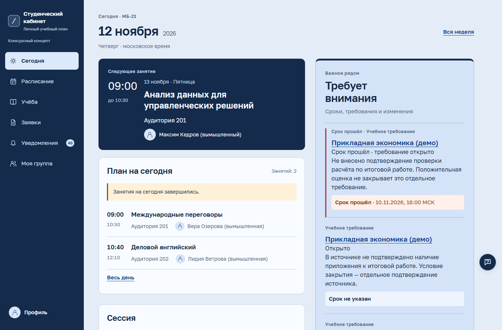
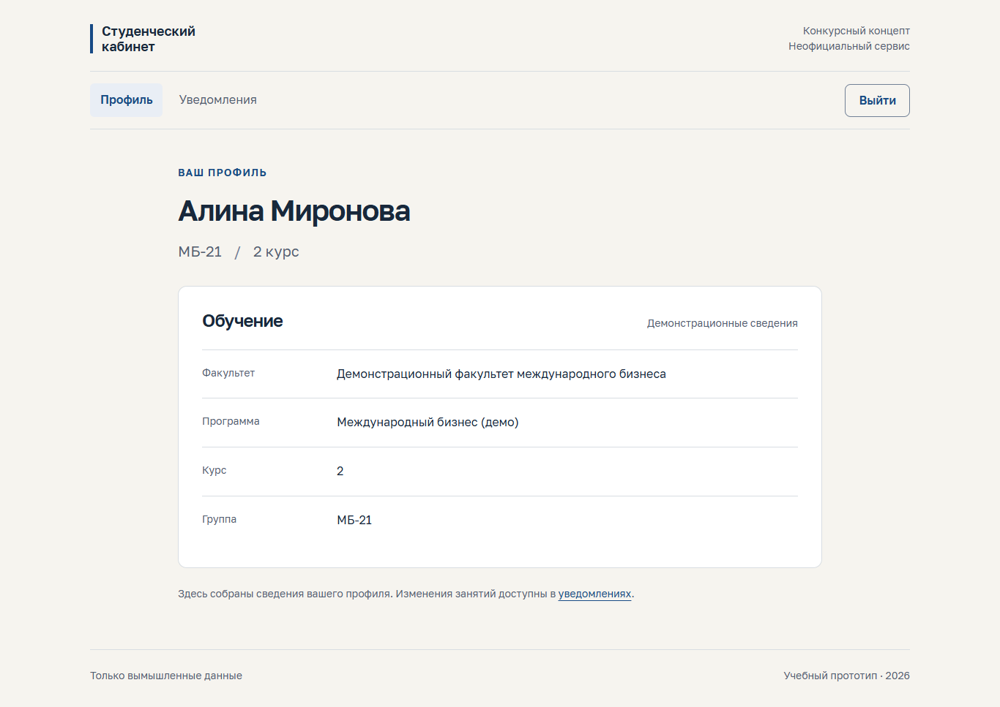
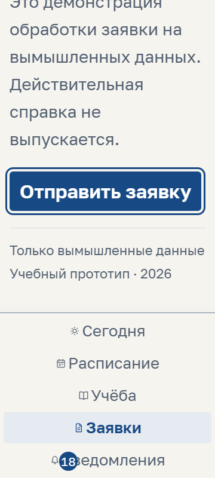
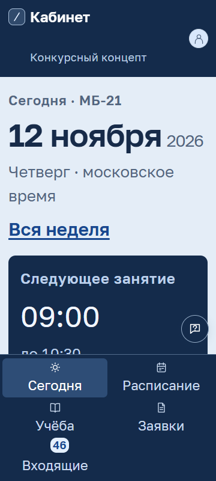
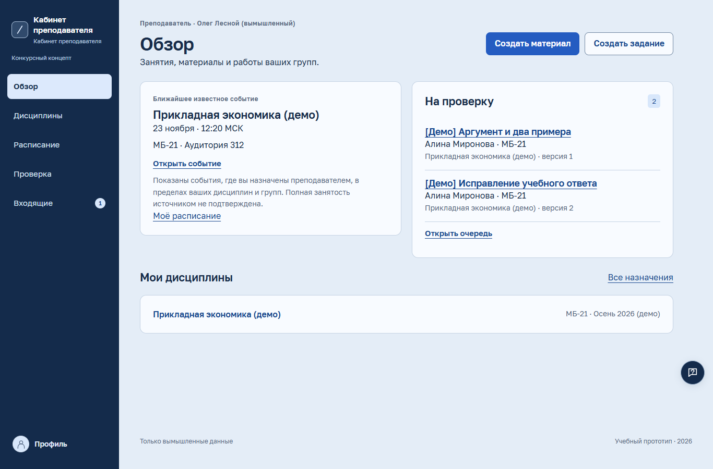
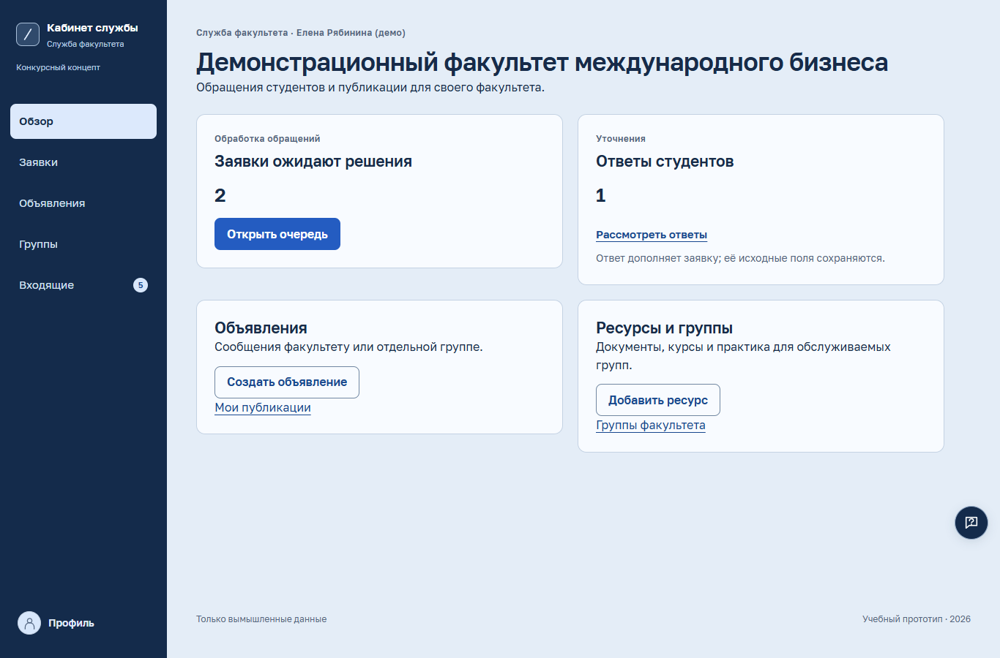
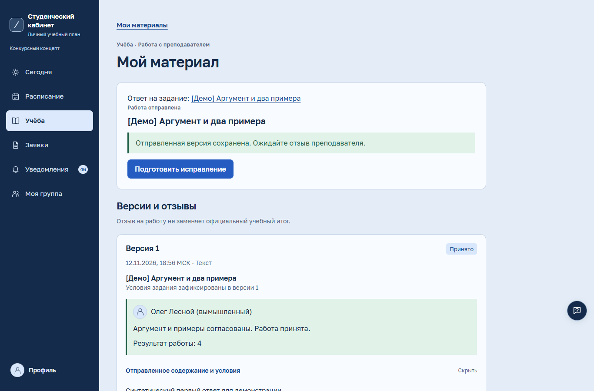
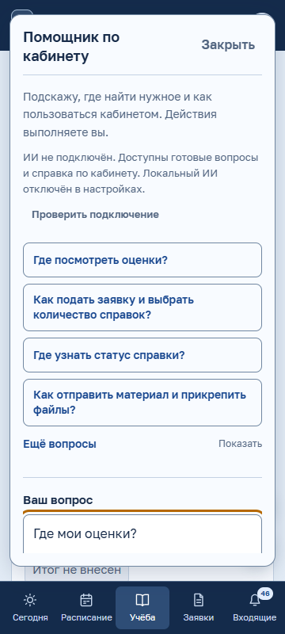

Конкурсный прототип · история создания · 13 ноября 2026
Найти нужное, подготовить вопрос, получить консультацию и вернуться к ответу.
Студенту нужно сопоставить расписание, учебные условия и статус обращения. Проектная гипотеза — собрать эти действия в связанном личном пространстве. Интервью и измерение эффекта внедрения не проводились.

Пять разделов: Сегодня, Расписание, Учёба, Заявки, Уведомления. На телефоне они остаются внизу. Поиск, сохранённая подготовка и консультации соединяют действия внутри этой навигации.
От требования к работающему коду
История составлена по сохранённым заданиям, исходникам, снимкам и проверкам. Точные версии исторических моделей и IDE не реконструируются. В одной ранней записи Codex указан gpt-6-astra; остальные сессии не получают это имя задним числом.
| Инструмент | Действительное применение |
|---|---|
| ChatGPT | Исследование, английские задания для Codex, разбор результатов и формулирование исправлений. |
| Codex | Код, команды, данные, документы и проверки. Агенты разрабатывали поиск, консультации и интерфейс; отдельно разбирали доступ и поведение. |
| PowerShell, Git, rg, Python | Файлы, поиск, история изменений, изолированные зависимости через venv/pip, воспроизводимые команды. |
| Django, PostgreSQL, psycopg, Axes | Вход, права, хранение, импорт, транзакции и ограничение попыток входа. |
| React, TypeScript, Vite | Календарь, материалы, формы, уведомления и помощник; проверка типов и готовая сборка для Django. |
| Playwright, Chrome/CDP, Firefox | Настоящие страницы, клавиатура, DOM, снимки и эмуляция размеров экрана. Для записей и просмотра также использовались ffmpeg и просмотр изображений. |
| Web и справочники | Первичные технические документы и исследование интерфейсов. Refero, UIWiki, Impeccable — справочные материалы, без переноса их изображений и кода. |
| Docker/Linux, Gunicorn, Caddy | Ранние локальные проверки установки и HTTPS-схемы. Текущая полная установка проверена на Windows. |
| Ollama, Qwen | Необязательный выбор темы справки в готовом продукте. Это отдельная функция, не описание способа разработки. |
| pypdf, PDFium, Pillow | Проверка файлов и документа; PDF создаётся браузерной печатью. Иллюстрации процесса не генерировались. |
Ранее процесс Sites применялся для локального просмотра checkout; размещения через Sites не было. Полная история и старый большой документ сохранены в рабочем архиве. Публичная выборка не выдаётся за исходную Git-историю.
Рабочий цикл: требование пользователя → реализация → настоящий запуск → проверка доступа и интерфейса → исправление. Неудачный прогон сохранялся как наблюдение, а не превращался в успешный отчёт.
Подлинная промежуточная версия
Первый работающий кабинет уже связывал вход с собственной учебной информацией. Дальнейшие изменения касались ясности: уменьшить повторение и оставить рядом факт, причину и доступное действие.

Дословный фрагмент задания об упрощении интерфейса
Reduce repetition and competing emphasis, while keeping necessary information understandable and visible.
Русское пояснение: уменьшить повторение и конкурирующие акценты, сохранив нужную информацию. Это пояснение документа, а не новый фрагмент исходного диалога.
Пользователь затем определил тёмно-синие и голубые поверхности, компактность при обычном масштабе, фиксированные инструменты справа и отказ от декоративных стрелок. Текущая версия следует этим решениям; ранняя светлая версия показана как этап развития.
Дословный фрагмент следующего задания
Important status must not depend on color alone.
Статус обозначается словами. Цвет помогает заметить отсутствие итога, просрочку или решение, но не несёт единственное объяснение.
Что не получилось с первого раза
При увеличении базового текста до 200% счётчик перекрывал подпись мобильного раздела. Обычного масштаба для проверки оказалось недостаточно. Компоновку изменили с учётом переноса текста и отдельно проверили строки списков.


Слева — подлинная ранняя ошибка, справа — новая проверка после последующих доработок. Разделы различаются: сравнивается навигация при увеличенном тексте, а не одинаковые записи.
Фоновая проверка доступа могла скрывать документ и закрывать инструменты. Обычную проверку отделили от настоящего скрытия и сброса. Панели стали немодальными, а ввод и прокрутка сохраняются, пока доступ действителен.
Дословный фрагмент задания о положении панели
Open each panel next to its button, normally above or to its left with viewport collision handling.
Связанные рабочие места
Студенческое ядро дополнено отдельной identity преподавателя и назначением на дисциплину, группу и период. Материалы, задания и очередь проверки строятся в этой области доступа.

Преподаватель публикует материал или задание. Студент открывает его в «Учёбе», готовит черновик и отправляет версию с файлами. Отправка фиксирует содержание и условия приёма. Преподаватель сохраняет отзыв именно к этой версии, а студент возвращается к нему и при необходимости готовит исправление.
Результат работы отделён от официального итога. Отзыв и балл за ответ не меняют оценку по дисциплине. Официальные учебные факты поступают через проверяемый версионный импорт.
В новой установке проверено сохранение отзыва к первой версии подготовленного ответа и его чтение студентом. Два приватных файла преподавательского материала открываются у студента нужной аудитории; второй студент получает отказ даже по прямому адресу.
От обращения до сохранённого ответа
Сотрудник видит заявки своего факультета, может уточнить вопрос у владельца и сохранить решение. Рядом находятся объявления и ресурсы обслуживаемых групп.

Студент подал заявку на два экземпляра. Сотрудник взял её в работу и запросил уточнение. Студент ответил, сотрудник рассмотрел ответ и завершил обработку. Владелец увидел сохранённые статус и историю; другой студент не получил эту заявку по прямой ссылке.
Ответ на уточнение дополняет обращение. Исходный владелец, содержание подачи и факультет не переписываются. История хранит статус самого события, поэтому прежний этап не выглядит как новое решение.
Успех означает сохранение. Статус, история и уведомление записываются согласованно. После повторной подготовки демонстрации сохранённая заявка и отзыв остались прежними.
Прототип не выпускает юридически действительную справку. Полный снимок результата и порядок повторения доступны в истории создания в репозитории и сценарии демонстрации.
От вопроса до следующего действия
Поиск помогает начать, подготовка сохраняет контекст, заявка возвращает ответ, консультация фиксирует договорённость.
Смысл нового задания — связать работающие разделы вокруг полезного результата. Студент ищет «обмен», открывает подготовку, собирает вопросы, передаёт план службе, отвечает на уточнение и выбирает доступное время встречи.
| Шаг | Что сохраняется и кто действует |
|---|---|
| Найти | Проверенные действия и разрешённые текущие объекты. Поиск не отправляет заявку и не бронирует встречу. |
| Подготовить | Личные шаги, применимость возможных документов и заметки. Студент может продолжить свою редакцию после входа. |
| Передать | Показанный перед отправкой снимок плана. Служба своего факультета отвечает на него; личная заметка включается только по выбору. |
| Обсудить | Подтверждённая запись с временем, принимающим и местом. Известные пересечения показаны до бронирования. |
| Продолжить | Уточнения и ответ остаются в заявке. Встреча видна на «Сегодня» и в расписании отдельно от учебных занятий. |
У вымышленной программы «Горизонт» можно разобрать CV/мотивацию, выписку, Learning Agreement и подтверждение языка. Для каждой категории есть «Нужно уточнить», «Требуется», «Не требуется» и основание. Перечень не объявляется действующим требованием МГИМО.
Отметка означает действие студента. Рассмотренный план не доказывает проверку файлов или зачисление. Поздние правки не меняют отправленный снимок. Второй шаблон — проверка неточности — повторно использует обычную заявку исправления учебных данных.
Исследование задаёт направление. Открытые материалы МГИМО помогли выделить проблему подготовки; ИТМО — явные этапы; MyUW — поиск сервисов; Stanford — запись к консультанту. Это описанные функции, а не измеренная полезность для наших пользователей. Даты, ограничения и решения сведены в отдельный документ исследования.
Полные оригинальные задания сохранены приватно. Здесь передан их смысл; сценарий самостоятельного показа — в документации продукта.
ИИ-ассистенты: ответственность и исправления
Владелец интеграции управлял общими настройками, жизненным циклом сеанса, миграциями и БД. Агенты получали отдельные файлы и согласовывали небольшие контракты. Один и тот же общий файл не передавался нескольким редакторам одновременно.
| Поток работы | Фактическое участие |
|---|---|
| Поиск | Серверные адаптеры и React-представление; отдельное чтение владения подготовкой, подписанного предпросмотра и снимков. |
| Консультации | Транзакции и ограничения PostgreSQL: последнее место, повторы, отмена, перенос и история. |
| Интерфейс и исследование | Компонент консультаций, первичные источники и независимый браузерный просмотр изменённых элементов. |
| Интеграция | Подготовка и связь с прежними заявками, общий контекст, защищённые копии, последовательные проверки и сборка. |
После защитного скрытия ожидание могло оставить форму занятой. Клиент получил восстановление возможности проверить результат и повторить то же намерение. Неподходящий JSON-тип мог вызвать ошибку сервера; типы теперь проверяются до обращения к данным. У будущей встречи уточнена проверка границ учебного назначения и источника.
Настоящий браузер выявил проблему поиска: множество справок вытесняло ссылку на форму с первой страницы. Совпавшие проверенные действия получили приоритет. Проверка с тридцатью однотипными объектами сохраняет этот результат и стабильный порядок.
Схему сначала обновляли на защищённой копии. Проверки использовали PostgreSQL и конкурирующие соединения. Два ранних сбоя относились к самим тестам: порядку JSON-ключей и повторному входу без завершения сеанса. Сценарии исправлены; неудачный запуск сохранён.
Предел вывода. Разбор ИИ не является человеческим аудитом. Завершённые прогоны и ограничения собраны в описании проверки; один удачный прогон не подтверждает весь продукт.
Применены чтение действующего кода, автономное завершение согласованного объёма, короткие устойчивые инструкции и проверки по рискам.
Защита как часть рабочего пути
Пароль проверяет Django; в БД хранится хеш. Сессия определяет пользователя. Сервер заново проверяет владельца и аудиторию каждого личного объекта: изменение номера в URL не даёт чужую заявку или файл.

Учебный импорт не сбрасывает заявки, решения, прочтения и пароли. Отправка, история и уведомление согласуются транзакцией. Перезапуск сервера не заполняет базу заново.
Файлы и перекодированные фото находятся в PostgreSQL. При скачивании проверяется доступ; общей публичной папки с личными файлами нет.
Тип, размер и структура вложений ограничены. Инспектор не называется антивирусом. Контакты группы публикуются только по отдельному согласию владельца.
При смене сеанса старые ответы и ввод очищаются. Обычная проверка действующего доступа не прерывает чтение.
Это меры прототипа, не сертификация. Технические контракты и роли описаны в архитектуре.
ИИ внутри продукта

Ранее использовались Ollama 0.33.2 и Qwen3-4B-Instruct-2507 Q4_K_M. Модель выбирала разрешённую тему; сервер выдавал проверенный текст и ссылку. Доступа к записям и операциям модель не получала.
В первом наборе из 12 вопросов было три ошибки понимания. После уточнения правил повтор дал 12 корректных выборов. Это результат конкретного набора, не общая оценка качества.
При подготовке публикации выяснилось, что заполненные настройки ещё не означали доступный сервис. Добавлены состояния проверки, недоступности, отсутствующей модели и ошибки inference. Установка модели проверяется через /api/tags; пустая память /api/ps не означает её отсутствие.
Готовые темы работают сразу. Новая установка не требует Ollama, GPU или весов. Положительные ответы провайдера здесь проверялись имитацией; Qwen заново не запускали. Поиск, подготовка и бронирование не зависят от модели. Она не читает заметки и не определяет допуск к обмену.
Дословный фрагмент задания публикации
Availability and the provenance of a particular answer are separate: a predefined topic can return a FAQ answer while a model is available, and model presence alone is not a successful inference.
Русское пояснение: доступность модели и происхождение ответа различаются. Нажатие готового вопроса не выдаётся за вызов ИИ. При отказе остаётся справка. Настройка, статусы и ограничения.
Решения и проверяемый результат
Пользователь выбирал задачу и направление продукта, возвращал замечания по настоящим экранам и требовал исправлять поведение.
Подтверждённый вклад: выбор кейса, предоставление исходных требований, подготовка заданий совместно с ChatGPT, перенос результатов между средами, просмотр работы Codex, свои снимки и обратная связь. Пользователь определил оформление, компактность, положение инструментов справа, сохранение чтения и отсутствие декоративных стрелок.
Наблюдаемые код, технические документы и проверки выполнял Codex перечисленными инструментами. Пользователю не приписываются интервью, ручное программирование, часы работы или построчное утверждение исходников. Проверки независимых агентов — дополнительный разбор ИИ, не внешний человеческий аудит.
13 ноября поиск, оба плана и консультации проверены в настоящих сеансах трёх ролей и после перезапуска. Снимок для службы не раскрывает личную заметку; 22 учебных результата сохранены. Новая установка из чистой выборки прошла без Ollama, а новые записи восстановлены из резервной копии в отдельную БД.
Управляемый локальный HTTP-сервер проверил отсутствующую модель, задержки, ошибки и восстановление. Настоящий браузер проверил панели на 1366 и 360 px. Запоздавшие ответы после смены владельца не должны переходить в новый сеанс; сервер и интерфейс проверены раздельно.
Дополнительный разбор новых сценариев выявил группировку уведомлений, встречу через полночь и неверный Unicode. Исправления проверены адресно. В Chrome и Firefox исправлены обрезанный профиль и перекрытый фокус при увеличенном тексте. Неудачные попытки и ошибки самих проверок сохранены в рабочем архиве.
Границы результата. Публичный сервер, доставка настоящих писем, доступ из российской сети, физические телефоны и конкурсная подача не подтверждены. Репозиторий сохраняет приватную видимость; доступ организаторам должен быть предоставлен владельцем отдельно.
Репозиторий и описание продукта
Полная установка и обычный перезапуск
Демонстрация трёх ролей
Проверки, среда и способы повторения
Сторонние компоненты · Права на материалы
Редактируемый источник — creation-process.html. Все иллюстрации — подлинные снимки приложения; исходные размеры доступны в репозитории. Внешние руководства по промптингу и полный архив переписки не распространяются.